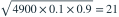

4900 人各自独立地以0.1概率到场。用不作连续性修正的正态近似，要求至少99%的概率座位足够。取 ，应至少设多少座位？
- A538
- B490
- C588
- D539
我已思考，展开答案与解析
正确答案：D
- 人数均值490，标准差

。要求座位数至少 ，向上取整539。
易错提醒先明确分布参数、独立性和统计量的定义，再进行计算。
资料校订：明确采用不作连续性修正的近似口径，避免整数边界歧义。
南审 813 · 2020 · 第1页 二·2；从大题提取考点并重写为单选
单选改编；题干与选项已重新编排
查看参考来源